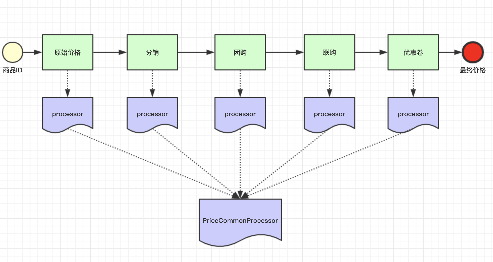

Spring @Autowired 注入到List和Map¶
需求¶
需求
对商品进行价格计算，计算价格设计到到元素是不固定到。有到商品涉及到优惠卷有到商品涉及到团购，有到商品全都涉及到。
每一个环节计算完成以后，要把价格传递给下一个环节接着计算。
抽象出一个模型就是流水线pipeline，一个阶段一个阶段处理，上一个阶段处理完成以后传递给下一个阶段

Spring实现pipeline¶
实现方式
Spring 使用 @Autowired + @Order 实现同一类型的实例注入到集合（List or Map）
1 2 3 4 5 6 7 | public interface PriceCommonProcessor { public Integer process(Integer lastPrice); } |
1 2 3 4 5 6 7 8 9 10 11 12 13 14 15 16 17 | import org.springframework.core.annotation.Order; import org.springframework.stereotype.Component; import lombok.extern.slf4j.Slf4j; @Component @Order(1) @Slf4j public class A_Processor implements PriceCommonProcessor{ @Override public Integer process(Integer lastPrice) { log.info("A >>>> processor"); return lastPrice - 100; } } |
1 2 3 4 5 6 7 8 9 10 11 12 13 14 15 16 17 | import org.springframework.core.annotation.Order; import org.springframework.stereotype.Component; import lombok.extern.slf4j.Slf4j; @Component @Order(2) @Slf4j public class B_Processor implements PriceCommonProcessor { @Override public Integer process(Integer lastPrice) { log.info("B >>>> processor"); return lastPrice - 200; } } |
1 2 3 4 5 6 7 8 9 10 11 12 13 14 15 16 17 18 | import org.springframework.core.annotation.Order; import org.springframework.stereotype.Component; import lombok.extern.slf4j.Slf4j; @Component @Order(3) @Slf4j public class C_Processor implements PriceCommonProcessor{ @Override public Integer process(Integer lastPrice) { log.info("C >>>> processor"); return lastPrice - 300; } } |
1 2 3 4 5 6 7 8 9 10 11 12 13 14 15 16 17 18 19 20 21 22 23 24 25 26 | import java.util.List; import org.springframework.beans.factory.annotation.Autowired; import org.springframework.web.bind.annotation.GetMapping; import org.springframework.web.bind.annotation.RestController; import com.example.demo.processor.PriceCommonProcessor; @RestController public class TestController { @Autowired private List<PriceCommonProcessor> list; @GetMapping("dd") public Integer getPrice(Integer lastPrice) { for (PriceCommonProcessor processor : list) { lastPrice = processor.process(lastPrice); } return lastPrice; } } |
执行命令$ curl 'localhost:8080/dd?lastPrice=1000'
控制台日志输出
- A >>>> processor
- B >>>> processor
- C >>>> processor
@Autowired可以直接注入同一type的实例到list，注入的顺序就是被@Order标记到顺序，从而形成pipeline模型- 不仅可以顺序注入到
List， 还可以注入到Map
1 2 3 4 5 6 7 8 9 10 11 12 13 14 15 16 17 18 19 20 21 22 23 24 25 26 27 28 29 30 31 32 | import java.util.List; import java.util.Map; import org.springframework.beans.factory.annotation.Autowired; import org.springframework.web.bind.annotation.GetMapping; import org.springframework.web.bind.annotation.RestController; import com.example.demo.processor.PriceCommonProcessor; import lombok.extern.slf4j.Slf4j; @RestController @Slf4j public class TestController { @Autowired private List<PriceCommonProcessor> list; @Autowired private Map<String, PriceCommonProcessor> map; @GetMapping("dd") public Integer getPrice(Integer lastPrice) { map.entrySet().forEach(e -> { log.info("{}--->>{}", e.getKey(), e.getValue().getClass().getName() ); }); return 1; } } |
- a_Processor—>>com.example.demo.processor.A_Processor
- b_Processor—>>com.example.demo.processor.B_Processor
- c_Processor—>>com.example.demo.processor.C_Processor